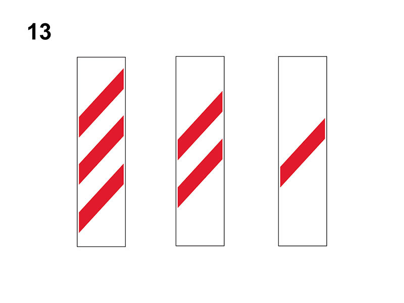

Pannelli distanziometrici

Sono segnali di pericolo e si trovano in prossimità di tutti i tipi di passaggi a livello (con barriere, semibarriere e senza barriere).
Servono ad indicare che ci si sta avvicinando all'attraversamento ferroviario.
Sono posti di norma dall'attraversamento ferroviario a:
Servono ad indicare che ci si sta avvicinando all'attraversamento ferroviario.
Sono posti di norma dall'attraversamento ferroviario a:
- circa 150 metri (3 barre rosse)
- circa 100 metri (2 barre rosse)
- circa 50 metri (1 barra rossa)